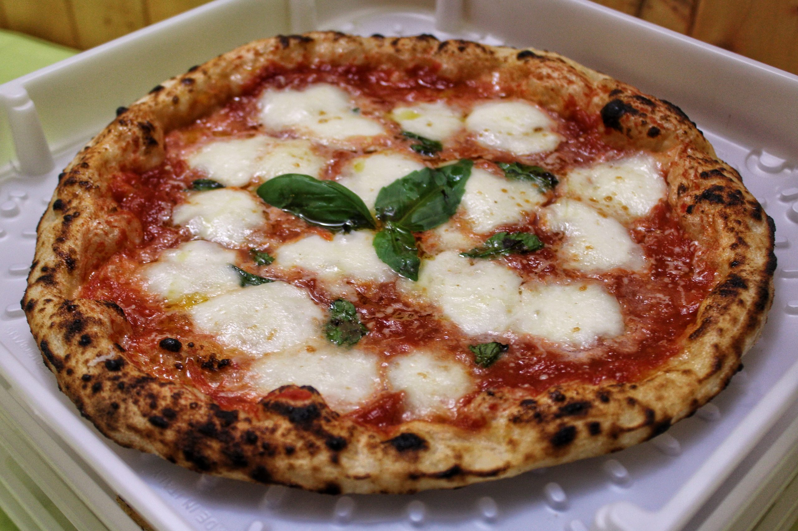
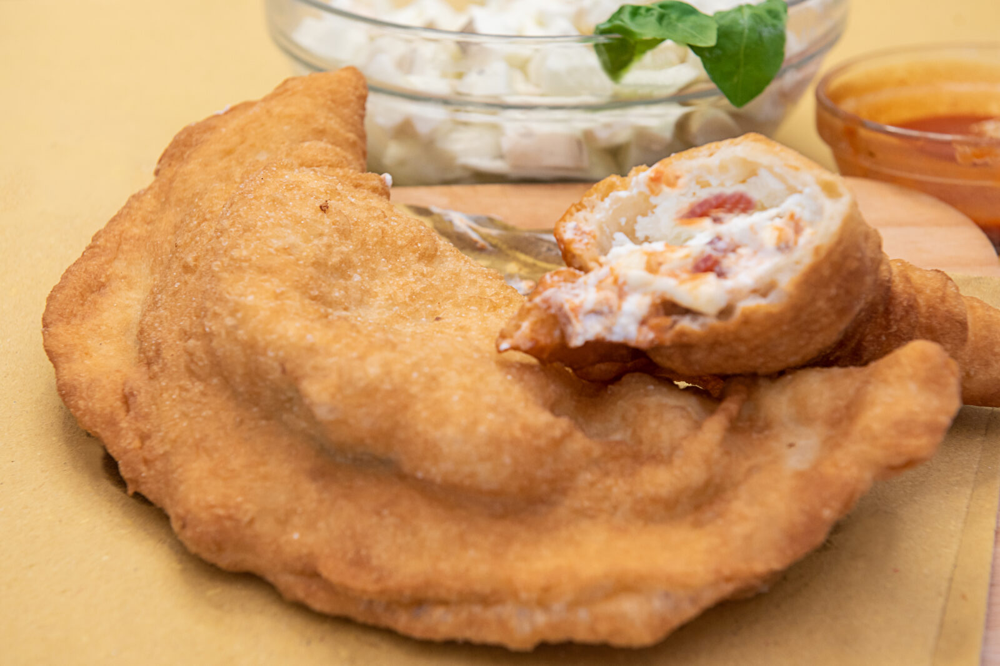
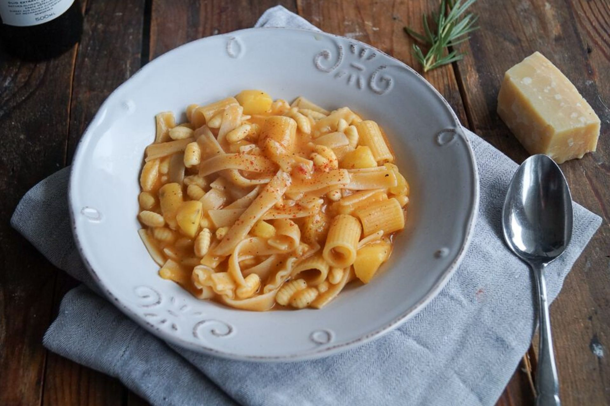
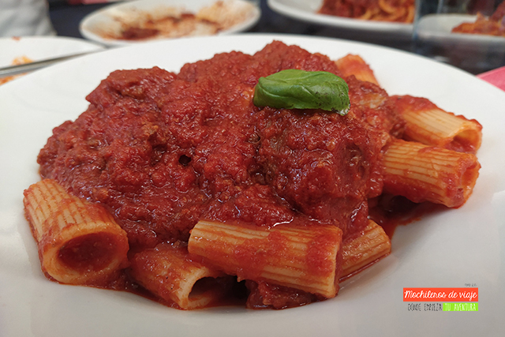
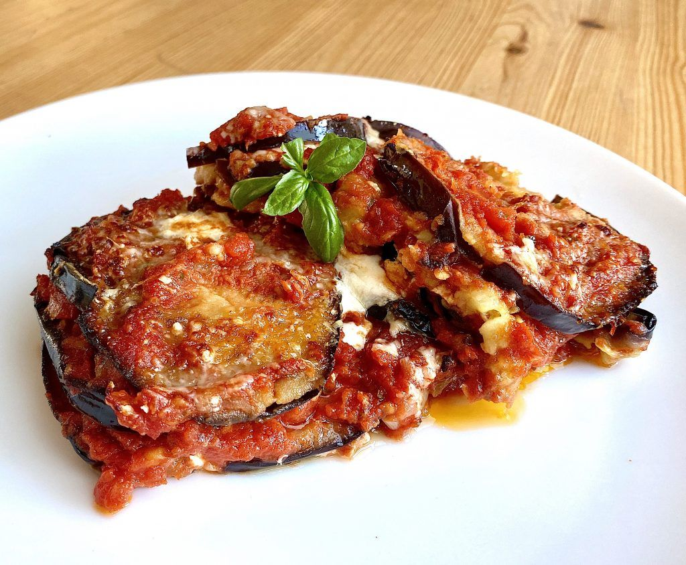
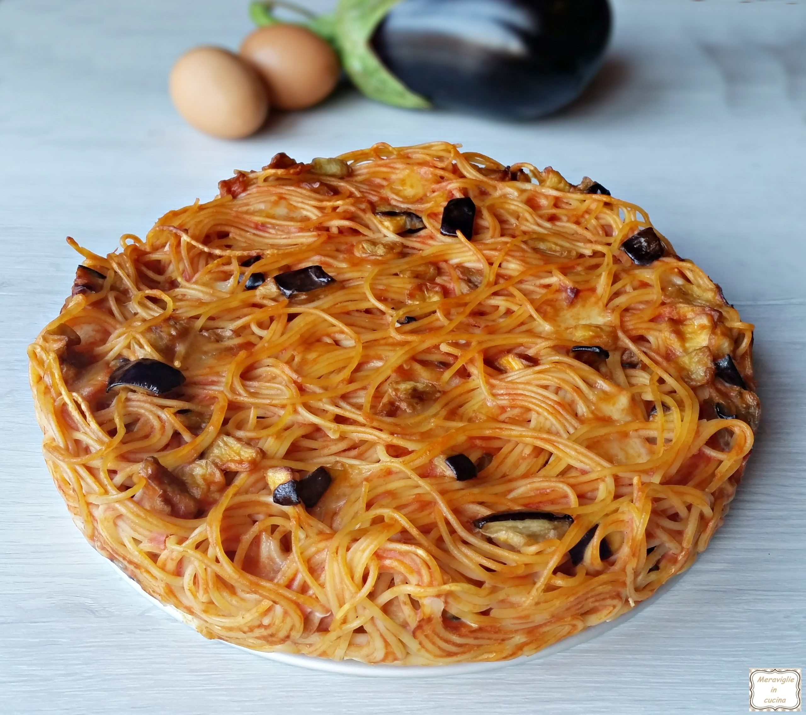

1. Pizza Margherita

Ingredients
- Tomato
- Mozzarella
- Fresh basil
- Extra virgin olive oil
History
Created in 1889 by Raffaele Esposito to honor Queen Margherita of Savoy, symbolizing Italy's national colors: red with tomato, white with mozzarella, and green with basil.
2. Pizza Fritta

Ingredients
- Neapolitan pizza dough
- Ricotta
- Provolone
- Salami
History
Originated in the late 1800s among working-class Napolitans who fried leftover pizza dough as a convenient street food. During World War II, as many ovens were destroyed, Pizza Fritta became even more popular, especially among Napolitan women who sold it in the streets.
3. Pasta e Patate

Ingredients
- Tubetti pasta
- Potatoes
- Onions
- Tomato sauce
- Grated Parmesan
History
A traditional dish from Naples, created by humble families who used simple, affordable ingredients to make a delicious and filling meal.
4. Ragù

Ingredients
- Ground beef
- Ground pork
- Tomato paste
- Onion
- Carrot
- Celery
- Red wine
- Milk
History
Ragù originated in Bologna, evolving from French
culinary traditions into a meat-based sauce. Used in classic Italian dishes such as
lasagna and tagliatelle,
it has become an iconic element of Italy's gastronomic heritage.
5. Parmigiana di Melanzane

Ingredients
- Eggplant
- Tomato sauce
- Mozzarella
- Parmesan cheese
- Olive oil
- Basil
History
A traditional dish from Southern Italy, Parmigiana di Melanzane is believed to have originated in Sicily, though it is widely enjoyed throughout the country. The dish layers fried eggplant, tomato sauce, and cheese, creating a delicious meal.
6. Frittata di Pasta

Ingredients
- Leftover pasta
- Eggs
- Cheese (e.g., Parmesan or mozzarella)
- Onion
- Olive oil
- Fresh herbs (optional)
History
Frittata di Pasta is a traditional Neapolitan dish born out of the use of leftover pasta. It’s a simple yet satisfying meal where pasta is combined with eggs and other ingredients, then fried into a golden, crispy omelet.